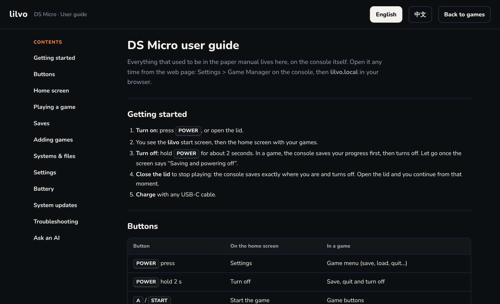

Build log / Oct 24, 2026
Managing games from a browser
The usual way to add games to a handheld is to pull out the SD card, or have it show up as a USB drive. I tried the USB drive route first and dropped it. Instead, the console runs a small web page you open from your computer's browser.

Why not just a USB drive?
- On this chip, USB drive mode stuttered and dropped data. The web page goes over a USB network link with error correction built in.
- The console stays in charge of its own card. Every write is "temp file, flush, rename", so a computer can never leave the card half-written.
- You only see what matters: games sorted by console. No system files, no logs, nothing to break.
What you can do there
- Add games to a console by dragging them in. Files the console can't play (like a .zip) are still accepted but marked red, with a reason.
- Covers: drop a PNG or JPG with the same name as the game. DS games show their built-in icon until you do.
- Rename a game and its cover, save file and all four save-state slots come along. This was the rule I cared about most.
- Saves: download all saves as one zip, restore them, or roll back a single game save.
- BIOS files for PlayStation and GBA (optional), checked against known versions.
- User guide: the manual lives here. There's no paper.

System updates
Updates use the same page. You drop in a package, the console checks it, backs up what it's about to replace, installs, and shows the log. Games and saves aren't touched. Since 1.1, this is the only way I update my own prototype.

It works on a Mac today. Windows needs a different USB network mode, which I'll test later.